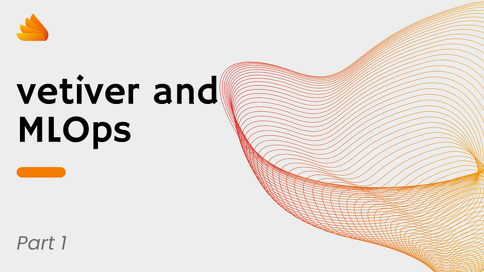
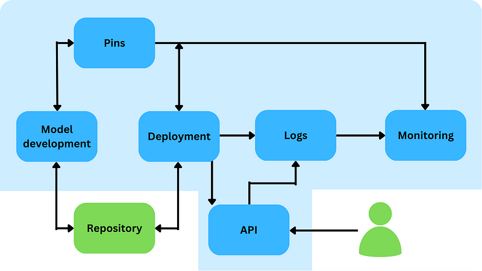

source(here::here('model_dev', 'R', '00_prepare_raw_data.R'))
library(tidyverse)
library(pins)
library(nycflights13)
# Clean up local board
board <- pins::board_local(versioned = TRUE)
allPins <- board %>% pins::pin_list()
for (i in allPins) {
board %>%
pins::pin_delete(i)
}
board %>%
pins::pin_write(x = nycflights13::flights,
name = 'raw_data')
board %>%
pins::pin_write(x = nycflights13::weather,
name = 'weather')
Learning objectives
The goal of this article series is to answer two questions:
Can we create a complete MLOps solution with vetiver?
If so, should we use it?
We’ll answer those questions by creating a toy example. Although everything will be done in R, the same tools and platforms can be used with Python.
Introduction
I previously wrote an article about using vetiver as an MLOps solution. I concluded that {vetiver} is a viable option only when dealing with a limited number of models and with no strict governance requirements.
While writing that article, I searched for documentation about an end-to-end R-only MLOps set-up based on {vetiver}. I found a few resources, but they all focus on the model development, rather than on the deployment and monitoring.
So I created my own toy example.
Before we start discussing any technical details, let’s first recap MLOps and the {vetiver} package.
MLOps
MLOps is a behavioural approach to the modelling work that aims to automate the deployment of quality models to production.
DevOps can teach us what we need to automate deployment successfully. We will need to:
- Version control our artifacts: code, data, and models.
- Automate model governance: who approves which steps and how they do that.
- Automate model building.
- Automate model testing.
- Automate model deployment.
- Automate model validation.
- Constantly monitor the deployed model, and log and report any significant activity (i.e., any failure in the deployment pipeline or any data drift for the model).
Note that there are some key aspects left out from this list. We’re not looking at things like autoML, auto-(re)training, or challenger/champion scenarios, advanced deployment strategy. We’ll delve into those topics further in the final article of the series.
Vetiver
{vetiver} is a relatively new R and Python package that, according to its own documentation page, aims to enable MLOps within these two languages. Metapackages such as {tidyverse} and {tidymodels} allows to build a model, and now with {vetiver} we can deploy those models.
In a nutshell, {vetiver} offers tools to:
- Add metadata and documentation to the model.
- Version control the model through
{pins}. - Easily deploy the model to Posit Connect or docker.
- Create a monitoring dashboard.
All those functionalities are great, and they work very well when we look at them in isolation. But what about building a complete MLOps solution using them?
This series of articles will explore this MLOps option.
Key constraint for this toy experiment
We have one main technical constraint: everything must be done in R and using Posit products. The only exceptions will be the version control system we use for our code base.
This might look like a strange constraint in MLOps, where everything is governed by ad-hoc tools and Python. However, if somebody is seriously considering {vetiver} as an MLOps solution, it’s very likely that all the staff available to develop and maintain such a solution are R developers, likely the modellers themselves. They will not be trained ML engineers or DevOps engineers. For this reason, I think that putting this constraint on the solution is valid. We will discuss the implications in the final article of this series.
How to use this article
This is a series of four articles. They will be structured as follows:
- Introduction to the MLOps problem and the model used.
- Deployment.
- Monitoring.
- Wrap up.
A repository is attached to this series of articles. The repository will be populated in sync with the article. That means if you look at it right now, you won’t find the monitoring piece yet. That will come with the third article. This is to avoid confusion due to the presence of code I haven’t explained here yet.
In each article, we will consider these aspects:
- The technical implementation of our toy example.
- What should be done differently in a real-life case.
- How our solution performs as an MLOps option, and if and when we should consider something different.
The solution building blocks
In an MLOps solution, you need a few technical parts to work together:
- Code.
- Data.
- Deployment.
- Monitoring.
- Logs.
In this section of the article, we will look at how we can design a system to connect all these moving parts.
Solution overview
We saw what the main three parts are. Let’s now look at how they work with each other.
The solution design is quite simple, but it serves our purpose.

Let’s analyze the diagram.
Hosting environment
The big pale blue block represents parts of the solution that are within the R ecosystem. This can be entirely rsconnect/workbench. You wouldn’t run any of those components locally in a production scenario, but the modellers could develop the model in RStudio local, depending on any data constraint. In this toy example, you can run the entire process locally.
The two elements outside the pale blue area are version control (you can use whichever tool you like for this, ideally something that enables automatic triggering of a pipeline like Github Actions), and the user calling our API. Since the API is exposed to the network, the user can be any person or system anywhere, as long as they have access to the API itself.
Pins
We use {pins} to store and version any non-code artifacts: the raw data, the processed data, and the model itself. This is probably not something you can or want to do in a big organization. We’ll discuss this more in-depth at the end of this article.
Deployment
The deployment is, in fact, an R markdown. The R markdown can be triggered to run automatically based on Git actions, but in this toy example, we’ll trigger it manually. The deployment script produces three class or artifacts:
- A report that can be explored to visualize the results of the last successful deployment.
- Logs for every attempted deployment.
- A model deployed as a
{vetiver}REST API (an implementation of a{plumber}API).
Logs
All logs produced by this solution are stored in the server hosting rsconnect/workbench. In our toy example, they’ll be stored locally. Logs are stored in a central folder, with sub-folders identifying the process that created them (deployment, model calls, etc.). Each process creates one log file per day. This might work for you, it might not, depending on the expected volume of calls your model is receiving.
Monitoring
Our monitoring is a {Shiny} dashboard. Here I completely discarded the {vetiver} option. {vetiver} gives you a {flexdashboard}, not a {Shiny} app. In my opinion, {flexdashboard} is not suited for production-grade dashboards. It has too many limitations and it doesn’t promote any good practice at all. The {Shiny} I built is not production-grade either, but it’s better than a {flexdashboard}. We’ll review this topic at the end of our series.
API
This is extremely simple. It’s a thin REST API wrapper that {vetiver} creates using plumber, and that simply takes in the request for the model and gives the prediction in return. I modified the plumber.R file to add logging capabilities and a ping endpoint. Those are missing in the basic implementation from vetiver but are fundamental to getting information about what is going on with the model at the deployment and monitoring stages.
Project Set up
Before we can begin working on our project, we need to complete a few set-up steps. For this revision, I will assume that you have cloned the repository into a new R project.
First, we need to restore the library by running the following command: renv::restore().
Now, we need to start populating the local board.
IMPORTANT NOTE:
Please note that there are steps in our workflow that will completely erase the local board. If you are already using it for something else, make sure you specify a different board for this project.
Here is the code for the set-up script:
The above code sets up an empty local board for our pins and stores some data from the {nycflights13} package onto the board.
The model
Building a model is going to be the easy part. We assume that the project has been approved by all stakeholders, and we can just develop it (we will discuss later what this assumption means for the MLOps process).
We will be using the same toy model that you can find in this tidymodels documentation. The only difference is that we split the data into three sets: a training set, a test set, and a keep-out set that we will use to mock real data in the monitoring phase.
Here is the code for the model:
library(tidyverse)
library(tidymodels)
library(pins)
# Assume you've run the 00_prepare_raw_data.R script.
board <- board_local(versioned = TRUE)
flights <- board %>%
pins::pin_read(name = 'raw_data')
weather <- board %>%
pins::pin_read(name = 'weather')
# Prepare the data
late_threshold_min <- 30
flight_data <- flights %>%
mutate(
# Convert the arrival delay to a factor
arr_delay = ifelse(arr_delay >= late_threshold_min, "late", "on_time"),
arr_delay = factor(arr_delay),
# Use the date (not date-time) in the recipe below
date = lubridate::as_date(time_hour) ) %>%
# Include the weather data
inner_join(weather, by = c("origin", "time_hour")) %>%
# Only retain the specific columns we will use
select(dep_time, flight, origin, dest, air_time, distance,
carrier, date, arr_delay, time_hour) %>%
# Exclude missing data
na.omit() %>%
# For creating models, it's better to have qualitative columns
# encoded as factors (instead of character strings)
mutate_if(is.character, as.factor)
# Fix the random numbers by setting the seed
# This enables the analysis to be reproducible
# when random numbers are used
set.seed(222)
# Create keep-out data to be used as mock real data
setdata_split <- initial_split(flight_data, prop = .99)
train_data <- training(data_split)
keep_out <- testing(data_split)
# Create training/test datasets
data_split <- initial_split(train_data, prop = 3/4)
train_data <- training(data_split)
test_data <- testing(data_split)
# Define the recipe
flights_rec <- recipe(arr_delay ~ ., data = train_data) %>%
update_role(flight, time_hour, new_role = "ID") %>%
step_date(date, features = c("dow", "month")) %>%
step_holiday(date,
holidays = timeDate::listHolidays("US"),
keep_original_cols = FALSE) %>%
step_dummy(all_nominal_predictors()) %>%
step_zv(all_predictors())
# Define the model
lr_mod <- logistic_reg() %>%
set_engine("glm")
# Workflow
flights_wflow <- workflow() %>%
add_model(lr_mod) %>%
add_recipe(flights_rec)
# Fit
flights_fit <- flights_wflow %>%
fit(data = train_data)
# Pin the data
board %>%
pins::pin_write(x = train_data,
name = 'train_data')
board %>%
pins::pin_write(x = test_data,
name = 'test_data')
board %>%
pins::pin_write(x = keep_out,
name = 'keep_out')As you can see, this is a simple model. This is fine. This series of articles is not about building a good model; it’s about building a framework to ensure model quality in production. In this context, the model is a cog in a much bigger machine. If you have a better model, simply replace this toy model with yours. As long as you respect the general architecture requirements, it does not matter what model you have.
Coming Up
In the next article of this series, we will dive into the core of the project: deploying our model.
We will put together a markdown to rebuild the model that the modeller prepared, validate it, and deploy it as a REST API.